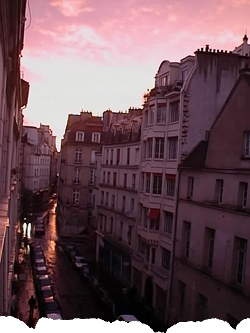

“It felt like if things continued the way they were, my body would disintegrate”
For twelve months after my wife left me, I lived in the Marais, on the Rue Vieille du Temple, in a tiny room the size of an American car. My single window looked down four stories to a corner market that once sold horsemeat and still had a sign advertising as much on its wall. Every night, I would lay down on my folding couch—sometimes collapsing in my jeans and collared shirt—and stare at the wooden beams in my ceiling and thought about the century or two they’d been floating there above the street. I would think about how long my lonely room had existed before I’d gotten there, how I was just a bee without a hive and that soon this city would be alive without me. I wasn’t planning suicide exactly, but it felt like if things continued the way they were, my body would disintegrate. I felt wholly incapable of feeling anything except sad.
The afternoon before I moved out, a friend of a friend dropped by. She was just moving to the city and I had told her the day before that she could have a box of plates and frying pans I would otherwise be throwing away. When she arrived I had been cleaning the shower, and stood there barefoot and shirtless in the doorway. Laura was ten years younger than me and asked to see the view from my window. I showed her the long street and how we could lean on my rail and watch the bald spots and dogs on leashes and umbrellas go by. We were sitting knee to knee on my couch when the realtor came by to show the place. The realtor had a kind of Gallic horror at interrupting anything chemical between a man and woman. The realtor, the client, and Laura left at roughly the same time, in a mixture of awkwardness and humor. Laura wished me well and a good life.
That night, I said good-bye to my friends at a bar up the street. My friends—French, American, English— each sat shoulder-to-shoulder with me at the a tiny table in the Klein Holland [1] and we all knew we might never see each other again. After each one squeezed me good-bye and left for the last metro, I went up the four flights of stairs to my apartment, where I lay down and watched the headlights make huge shadows out of the roofbeams. It was one in the morning my last night in Paris when the window said my name. I rose from bed and went to the rail. On the opposite sidewalk, Laura and a friend were staring up at me. I raised one finger: wait, wait. As I moved away, I saw the friend hug Laura good-night and then Laura’s red hair was crossing the street to my door. And I had a sudden, incandescent certainty that I would never die and would always be loved.
location information
- Name: in the Marais
- Address: 13, Rue Vieille du Temple 75004 Paris
- Time of story: Morning
- Latitude: 48.859012
- Longitude: 2.356739
- Map: Google Maps
017 “I opened the hip high gate and found a green wooden bench in the shade”
016 “I didn't know what it was she had that I wanted.”
015 “She was still there, with her shining coat of orange and the green belt of the RER C at her feet.”
014 “Paris is its own reason.”
013 “Gilded angels taking off from Châtelet, Bastille, Invalides”
012 “A dialogue out of nowhere and from the 5th dimension”
011 “I started screaming New York-style obscenities.”
010 “Her soul is okay though, she’s just received Holy Communion at Saint-Nicolas, one station before”
009 “It felt like if things continued the way they were, my body would disintegrate”
008 “It reminded me of an Yves Saint Laurent dress, of mermaids and of Christmas”
007 “I felt a sense of relief as I experienced the rare soothing absence of fluorescent light”
006 “My fist flew wildly and connected with the warm Parisian evening air”
005 “Someone handed me a plastic cup of white wine and I sipped it so I didn’t have to make conversation”
004 “The white winter sunshine makes it warm enough for tourists and locals to sit outside the cafe on the Place des Abbesses”
003 “Two cans of beer in the thin plastic bag”
002 “Je ne suis pas une femme facile”
001 “His guitar was underscoring my morning ride beyond Gare du Nord through the graffitied suburbs”

Write for Us!
We’re looking for short narratives describing pivotal moments of elation, confusion, absurdity, love or grief — or anything in between — inseparably tied to a specific place in Paris.
Paris:
Or receive updates by email
Addresses only used for the occational hitotoki mailing. Otherwise stored on the 4th floor of Tokyo Tower.
A list of all available RSS feeds is on the about page
commentary